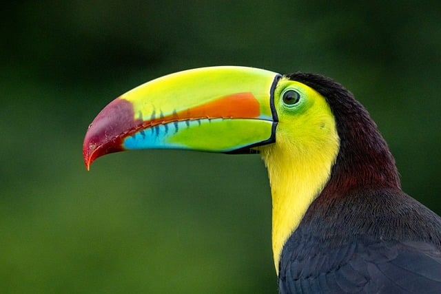
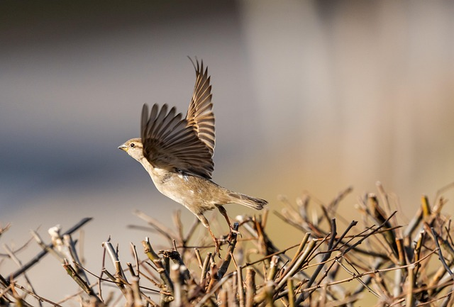
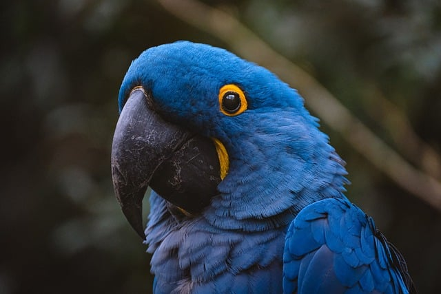
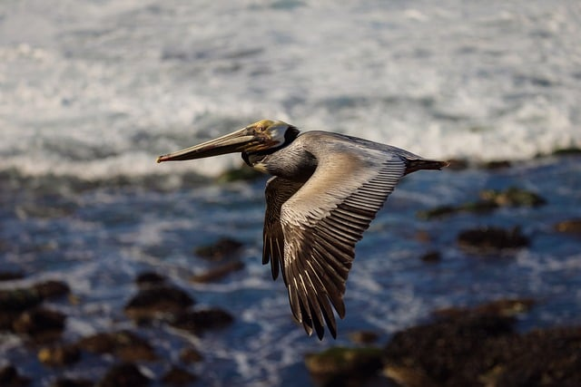

Pássaro azul com cinza. Acesse aqui Pássaro azul com cinza. Acesse aqui |
Curiosidade sobre as coresAs cores dos pássaros e muitos outros animais têm várias funções, que vão desde a camuflagem e advertência, até função a de chamar a atenção para conseguir um parceiro ou intimidar rivais. Nos pássaros, as cores vibrantes são encontradas principalmente nos machos. Os pavões, por exemplo, exibem suas grandes penas coloridas tanto para atrair as fêmeas quanto para espantar possíveis predadores.
Muitas outras aves costumam eriçar suas penas para parecerem maiores e mais intimidadoras quando se sentem ameaçadas. |
| Belo pássaro (Tucano). Acesse aqui |
Tucano peito amareloO Tucano de Peito Amarelo é uma dos mais coloridos de todos os tucanos.
O Tucano de Peito Amarelo (Ramphastos vitellinus) é uma ave da ordem Piciformes, da família Ramphastidae.
Ele é conhecido também como canjo ( em Mato Grosso), tucano-de-peito-amarelo e tucano-pacova.
Seu habitat são as florestas tropicais e pode ser encontrado em toda faixa litorânea que vai do Pará e Santa Catarina.
Sua cor geral é preta, com a garganta e peito de cor amarelo gema de ovo e distingue-se dos demais tucanos, por possuir bico negro, mas na base apresenta uma zona amarela pálida. |
| Pardal (voo). Acesse aqui |
PardalO peso de um pardal adulto geralmente não excede 30 gramas. E o menor dos pardais, os régulos, pesam de 10 a 12 gramas.
No total, cerca de um bilhão de pardais vivem na Terra.
Assim como as pegas, os pardais são propensos a roubar vários pequenos itens.
Teoricamente, os pardais podem viver por dez anos, mas na verdade a maioria deles não sobrevive a um inverno.
Durante o vôo, o coração do pardal se contrai até 1.000 vezes por minuto.
Os pardais vivem ao lado de pessoas há cerca de 10.000 anos. |
| Arara-Azul. Acesse aqui |
Arara-AzulA arara-azul é uma espécie de arara que se destaca pela beleza de suas penas azul-cobalto e por seu tamanho, sendo a maior espécie do grupo dos psitacídeos. "A arara-azul, também chamada arara-azul-grande, é uma espécie de ave, encontrada no Brasil, que se caracteriza por ser a maior entre os psitacídeos (família Psittacidae), chegando a atingir mais de um metro de comprimento, medindo-se da ponta do bico à ponta da cauda. Essa espécie habita diferentes formações vegetais, sendo encontrada em formações savânicas e até em ambientes de floresta no Brasil, Paraguai e Bolívia. As maiores populações dessa espécie de arara são encontradas no Pantanal."
Veja mais sobre "Arara-azul": Click aqui |
| Pelicano. Acesse aqui |
PelicanoPelicans é um gênero de aves aquáticas da família Pelecanidae. Eles são caracterizados por um bico longo e uma grande bolsa na garganta usada na captura de peixes e na drenagem da água do conteúdo recolhido antes de engolir. Eles têm plumagem predominantemente pálida, com exceção dos pelicanos marrons e peruanos. Os bicos, bolsas e pele facial nua de todas as espécies tornam-se coloridos antes da época de reprodução. As oito espécies vivas de pelicanos têm uma distribuição global irregular, variando latitudinalmente dos trópicos à zona temperada, embora estejam ausentes do interior da América do Sul, bem como das regiões polares e do oceano aberto. |